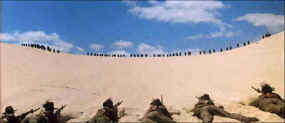

| Gallipoli/B+,B+ |
| Paramount/1981/111/ANA 2.35 |
You expect
nothing less than a very fine anti-war drama from a director with Peter Weir’s credentials and Gallipoli
delivers all the power and explosiveness that the best films of the genre contain.
Set during 1915 World War
I, Weir’s story begins in the Australian provinces where raw power rules the day. Young and
innocent Archy is great sprinter trained by his martial uncle. The sunrise training sequences,
quick and short just like a sprint, are stirring. They manage to say a lot about the characters in
a few brief moments. At a local race Archy meets Frank, a free-spirited runner without Archy’s
discipline. The two runners bond and it’s no surprise when the fast (sic) friends join the armed
forces to fight for mother Australia far, far away from home.
 |
| The sweep of war in Gallipoli. ©Paramount |
The bravado nature of the home front scenes sets up a devastating contrast with the harsh reality
of the battle for control of the Dardanelles Straits. The Australian-New Zealand Force is charged
with taking the beachhead from the seasoned Turks. The high command is insensitive to reports from
the trenches. Much like the ill-fated Charge of the Light Brigade at the end of the nineteenth
century, the soldiers from Down Under are sacrificed to the folly of their superiors.
Director Peter Weir’s sense of composition is magnificent. His films are
consistently haunting. The camera places his well-developed characters in a superbly realized
world. Weir’s sense of timing is fine tuned to illicit the most from each segment of film. DP
Russell Boyd paints the landscapes with panoramic power delivering everything his director asks of
him.
Mark Lee is very effective as Archy, but it’s Gibson as Frank that the
camera can’t keep its eyes off. Once again viewers are reminded of the young Gibson’s center of
gravity as an actor. The jokey delivery is kept at bay and Gibson’s charm dominates the screen.
The small roles, as in every Weir film, are beautifully cast and effectively assayed.
Gallipoli is a very good
DVD. The stylistic grain of the film is transferred and compressed with finesse. The picture
dynamics are slightly compressed but overall there’s plenty of light output and the color
intensity holds up reasonably well. The Dolby Digital 5:! Surround might have offered more from the
explosiveness of war, but the music and dialogue is presented with clarity and power. The
anamorphic transfer may not be as sharp as Lost
in Space or some other effects laden film, but the content is well enough supported by the image to
make this DVD a worthwhile purchase. A short filmed interview with Peter Weir is a nice addition to
understanding the film.
|
|
|
|

Selections from the feature archive include articles on
Akira Kurosawa, Frank
Darabont, Blonde Bimbos, Hollywood Street Gangs, or Vietnam: The
Hollywood Pariah, and many more....

Hail, Hail, the Gangs in Hollywood
From Angels with Dirty Faces to West Side Story to
Menace II Society, Hollywood has depicted youth gangs as reflections of the times.

 Gary Morris's insightful publication Bright Lights
Film Journal turns the celluloid in films from a unique perspective. Click on the image above
for more pure movie views. Gary Morris's insightful publication Bright Lights
Film Journal turns the celluloid in films from a unique perspective. Click on the image above
for more pure movie views.
 Direct from the corridors of the Home Theater Forum, Home Theater Talk is the
newest place on the Net to discuss everything home theater. Friendly atmosphere and knowledgeable
folks are the secret ingredients. Direct from the corridors of the Home Theater Forum, Home Theater Talk is the
newest place on the Net to discuss everything home theater. Friendly atmosphere and knowledgeable
folks are the secret ingredients.
Imaging Science Foundation
The Imaging Science Foundation promotes proper standards in home theater viewing. ISF trained
technicians offer monitor calibration services to consumers. The difference in a properly
calibrated monitor can be astounding. Click on the image to find an ISF member near you.

Information on film sound in theaters and home theaters. Lots of helpful information provided in a
handsome interface.

The
Movie Poster Archive includes extensive poster images from the films of stars like Susan Hayward,
Kirk Douglas, Katharine Hepburn and many more. Our featured star is Errol Flynn.
|
|